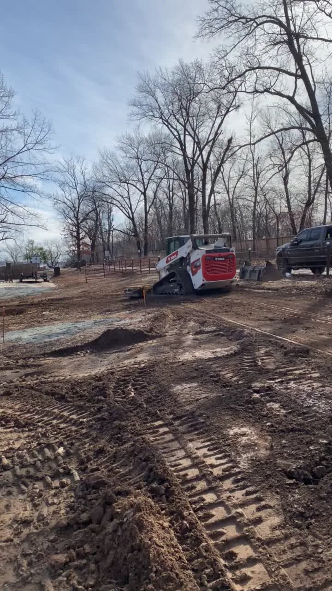
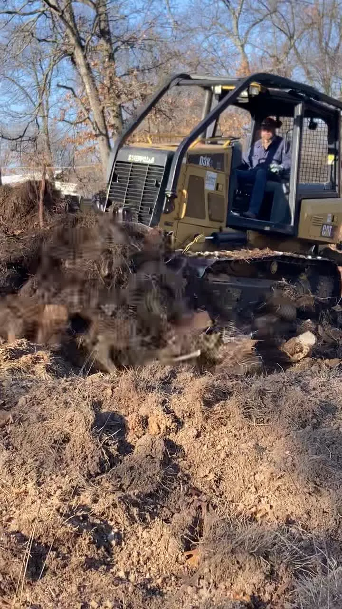
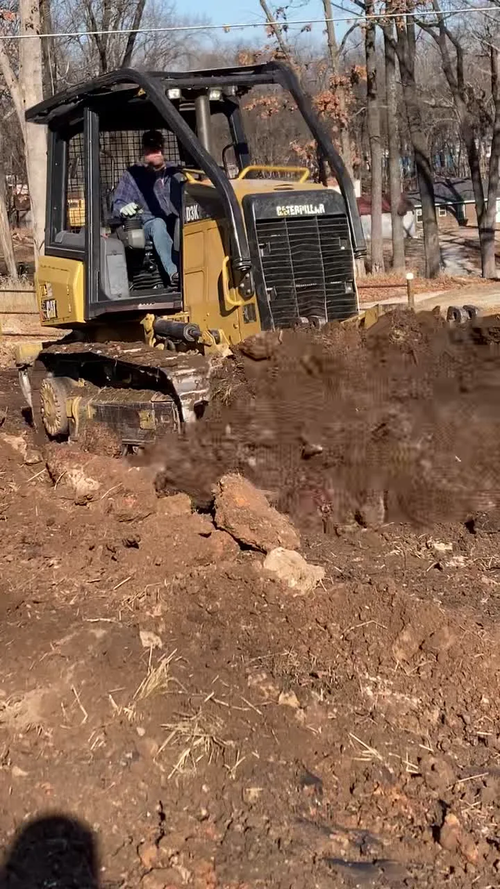
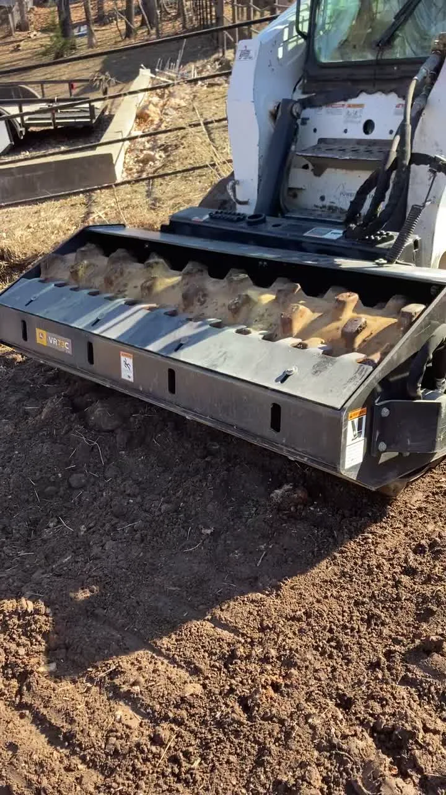
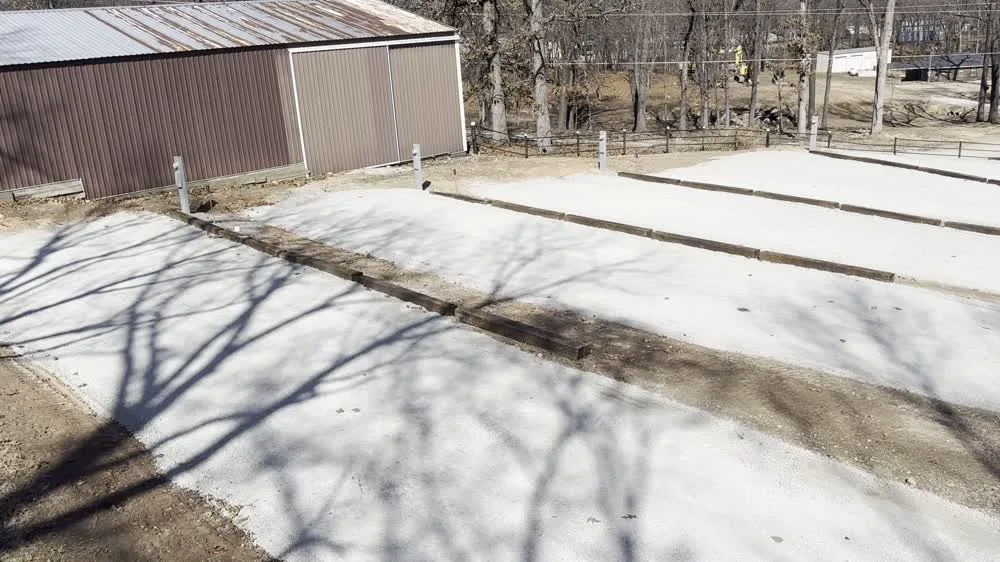

Commercial Site Development • Afton, Oklahoma
Paradise Cove
RV Park
Rafter E served as prime contractor for the development of this nine-space RV park, completing the site work and coordinating the trades needed to move the project from raw ground to a finished development.
The Project
Building a durable RV park from the ground up.
The owner wanted a clean, durable nine-space RV park that would serve visitors for years to come. Rafter E handled site preparation, grading and gravel pad construction while coordinating the electrical and plumbing subcontractors throughout the project.
The project took approximately 4–5 weeks. A snowstorm moved through during construction and slowed progress, but the focus stayed on proper grading, drainage and a finished site that would perform after construction was complete.
Construction
From site work to finished pads.






The Result
Turned out great. Stayed within budget. Held up.
The following year brought an exceptionally wet season, and the grading and RV pads continued to perform extremely well.
“What I’m most proud of is that the project turned out great, stayed within the owner’s budget, and continued to perform well after an exceptionally wet season.”
Planning a Project?